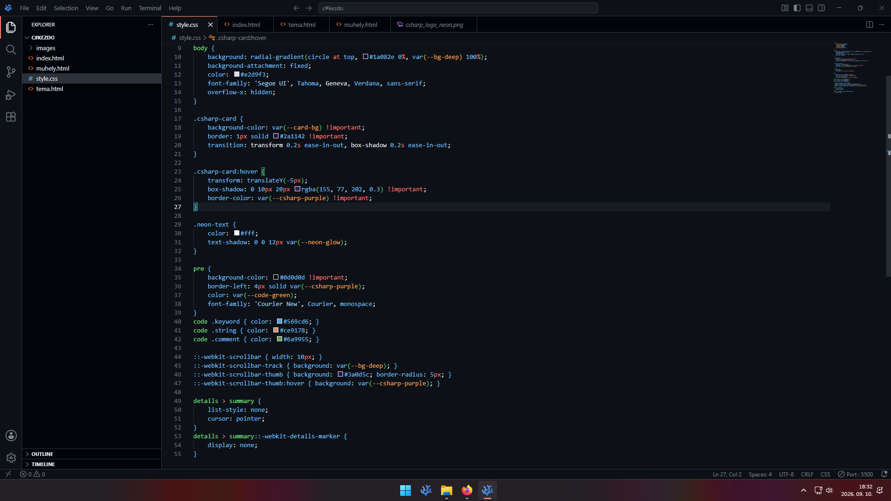

Fejlesztői Műhely & Debugging
Debug Teszt: Mit ír ki a kód?
A szoftvertesztelés alapja a kód viselkedésének előrejelzése. Kattints a sorokra a megoldásért!
1. Console.WriteLine(16 + 8);
Kimenet: 24
Mivel szám típusokról (int) van szó, a C# matematikai összeadást hajt végre a háttérben.
2. Console.WriteLine("Ping: " + 25);
Kimenet: Ping: 25
Ha egy stringet és egy számot fűzünk össze a + jellel, a rendszer szöveggé konvertálja a számot.
3. string[] net = {"LAN", "WAN"};
Console.WriteLine(net[2]);
IndexOutOfRangeException
A tömbök indexelése 0-tól indul, így a 2-es index a harmadik elemet keresné, ami nem létezik a hálózati tömbünkben.
Gyakori szintaktikai hiba
A kezdő C# programozók leggyakoribb hibája a pontosvessző (;) lehagyása a parancsok végéről. Ennek hiányában a fordító (Compiler) CS1002 hibakóddal leáll, mert nem tudja, hol ér véget az utasítás.
A Csapat
Szinte egész életünket a számítógép előtt töltjük. Akkor hasznosítsuk is, és akár segítsünk másokat is. Gondoltuk Mátéval.
Ezért elkészült a C# DevLab.
Ki mit készített a projekten belül?
- Müller Bálint: A teljes C# kódok írása, lokális tesztelése és futtatása, valamint az
index.html,muhely.html, és atema.htmlreszponzív szerkezetének felépítése Bootstrap segítségével. Ezek mellett az üveghatás beállítása css-ben. - Arthoffer Máté: A dizájn megálmodása és megvalósítása, a projekt szövegének felépítése. C# és html kódok tesztelése, validálása. Ezek mellett a projekt pénzügyi menedzsere és támogatója.
Dokumentált részlet a munkánkból:

Kártya animáció a CSS-ből:
.csharp-card:hover {
transform: translateY(-5px);
box-shadow: 0 10px 20px rgba(155, 77, 202, 0.3) !important;
border-color: var(--csharp-purple) !important;
}Felhasznált Források & Dokumentáció
- 📄 Projektkövetelmény: Czifra Bálint: IKT Projektmunka II. (Közös portfólióhonlap projektfüzet)
- 🌐 C# Referencia: Microsoft Learn Dokumentáció — learn.microsoft.com/csharp
- 🎨 Keretrendszer: Bootstrap 5.3 hivatalos dokumentáció — getbootstrap.com